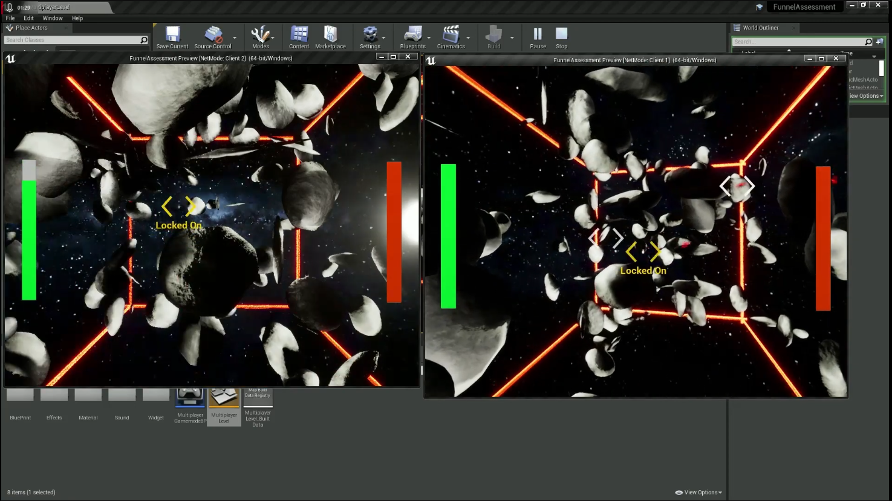

AUSAMA Y.Z.
Unreal Engine 4 Multiplayer Demo (2023)
シドニー工学大学

Unreal Engine 4を使用したマルチプレイヤーデモです。自動生成された小惑星で埋め尽くされた宇宙を飛び、1対1の戦いでドローンを使って相手を倒すゲームです。
この作品について
2人ペアでマルチプレイヤーと自動生成を活用したデモを制作する課題に取り組んだ時に制作したゲームです。
小惑星帯の自動生成・クライアント同士のマルチプレイヤーシステムを導入しましたが、Unreal Engine 4やC++は初めてだったので、ハードルが高い課題でした。
特にマルチプレイヤー機能が最も重要だったので、ゲームにおいてのマルチプレイヤーがどう動くかの理解、そしてそれをうまくデモで導入できたことが良かったと思っています。
役割
- キャラクターコントローラー
- 小惑星帯自動生成
- マルチプレイヤー機能
使用ソフト
Unreal Engine 4 + C++